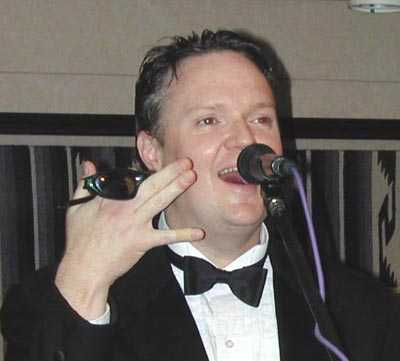
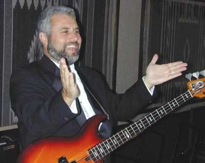
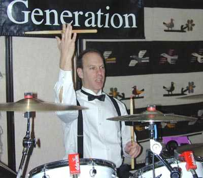

|
Trish Soulen Lead Vocals |
A 20 year show biz vet, Trish has performed all over the country from rock bars and jazz clubs to cabarets and dinner theatres. She is a published songwriter, collaborating with jazz virtuoso Tania Maria on her acclaimed “Lady From Brazil” album. Trish and musician husband Pete recently became the proud parents of a baby boy. She joined the boys of 2nd Generation early in 2004, and is now able to enjoy a dual career as both a dynamic lead vocalist and full-time mom. |
| Singer, songwriter, guitarist, pianist, arranger, producer-Michael does it all. He began piano lessons in the 3rd grade and taught himself guitar. He composes commercial jingles and film scores in his home recording studio, as well as original songs. His CD, Share the Disguise, received strong reviews and earned a MN Music Awards nomination. Michael created the Looney Bin Band and parody songs for KSTP-AM's The Mischke Broadcast. He has written and produced several radio/TV jingles for Mike Veeck, nationally known marketing guru. |
Michael Loonan
Piano/guitar/Vocals  |
|
Andy Richards Guitar/Vocals |
Andy started his musical journey when the character he played in a high school play was required to play acoustic guitar. His early influences were, and still are, The Beatles, Crosby, Stills, Nash & Young, and Cat Stevens. Shortly after high school, he and Doug co-founded and formed the 50s and 60s group Midnight Sun. This evolved into a country band before eventually disbanding. It wasn't long before he and Doug launched 2nd Generation. Early on 2G backed up Dash Riprock regularly at the Withrow Ballroom. |
|
18 years after co-founding the group, Doug continues to carry the bottom for 2nd Generation with his great R & B style and solid technique. Growing up in the 60s and 70s, his influences were everything from Motown to McCartney. In addition to his musical contribution to the band, Doug's technical expertise and experience in the area of sound production and equipment acquisition continues to keep the band's sound values on the cutting edge. |
Doug Salmela Bass Guitar  |
|
Martin Appelbuam Drums/Electronic Percussion  |
After becoming frustrated and smashing his trombone in the 4th grade, Martin took up drums at the age of 12. He has performed with Crystal, 3 Faces Turned, Us, The Janes and Cactus Cadillac. Martin teaches high school in St. Paul, and is also the director of "Drum Up Your Life!", an eclectic presentation on the history and uses of drums from various cultures. He loves a wide variety of music, and plays African drums, latin percussion and Japanese Taiko drums. |